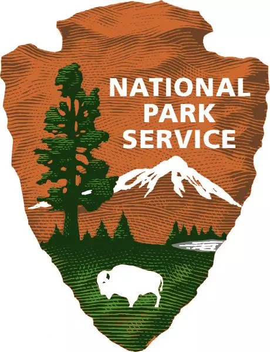
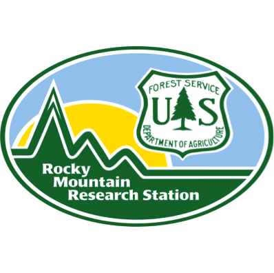

Research
Watch a recent research seminar on fundamental niches of trees by Daniel Laughlin in the Ecology and Evolution Seminar Series at UW.

Funded projects
Fire and Water in the West: Trait-based demographic dynamics of forest communities
Funded by NSF, 2025–2029
Daniel Laughlin, Bob Shriver
Drought and fire are driving widespread tree mortality and limiting tree recruitment in forests across the western United States. Forest ecologists do not fully understand which combinations of drought and fire adaptations will drive changes in tree species abundances in the future, and large gaps in existing functional trait databases prevent researchers from leveraging new analytical frameworks that integrate traits into demographic models. The aims of this project are to 1) quantify adaptive traits of tree species in the West and publish results in an open-access database, and 2) quantify the effects of traits on demographic rates that shape the contours of fitness landscapes in response to changing drought and fire. To achieve these aims, the researchers will measure and compile a comprehensive data set of traits on >100 tree species that capture key dimensions of functional strategies that evolved in response to water limitation and fire regimes, with a focus on bark thickness allometry, resprouting ability, xylem vulnerability to embolism, and rooting depth growth rate. These trait data will be combined with demographic data from the national forest inventory to test our mechanistic understanding of the demographic consequences of traits in multi-species forest communities using structured population models. The goal of this research is to provide a functional explanation for the widespread lack of forest recovery after fire in dry conditions.
Herbaceous common garden array for restoration
Funded by USDA Forest Service, 2024–2029
Daniel Laughlin, Donna Shorrock
Realized niches of species are but shadows of fundamental climatic tolerances of plant species. The objectives of this project are to quantify the climatic tolerances of 24 herbaceous species native to the Rocky Mountains using four common gardens that span >10 degrees C in mean annual temperature. We will test theories about the architecture of ecological niches and to test the performance of species for post-fire restoration in the Front Range.
Disturbance impacts on vegetative recovery in subalpine forests
Funded by USDA Rocky Mountain Research Station, 2024–2026
Daniel Laughlin, Paula Fornwalt
Quantifying how alpine ecosystems are changing requires remeasurement of plant communities that were measured in historical surveys. Previous studies in the Snowy Range in the Medicine Bow-Routt National Forest offers a unique opportunity to study these changes. The site ranges from 3200-3500 m (10,500-11,500 ft), and hosts 289 species of vascular plants in a variety of vegetation types. We are remeasuring permanent plots established in the 1980’s in the Glacier Lakes Ecosystem Experiments Site (GLEES). We will analyze species composition and structure to quantify changes in the alpine ecosystem over the last 37 years in relation to recent trends in temperature and snow pack.
Ecology and restoration of vegetation in Grand Teton National Park
Funded by National Park Service, 2025–2030
Daniel Laughlin, Laura Jones
We will evaluate plant community trajectories using existing and future long term monitoring data to determine how biotic and abiotic factors such as herbivory, microorganisms, inter-species competition, soils, and climate influence restoration and management outcomes.
Enhancing sagebrush restoration in Grand Teton National Park
Funded by National Park Service, 2023–2028
Daniel Laughlin, Linda Van Diepen, Laura Jones, Erik Kramer
Evaluating sagebrush steppe condition, restoration efficacy and community trajectories in Grand Teton National Park
Funded by National Park Service, 2020–2026
Daniel Laughlin, Laura Jones, Erik Kramer
Former funded projects
Modelscape: a Research Collaborative to Develop Highly Predictive Explanatory Models
Funded by NSF, 2020–2024
Buerkle, C.A., J.R. Blaszczak, S.M. Collins, R.O. Hall, L. Shoemaker, D.C. Laughlin, C. Weiss-Lehman, M. Forister
Applying Trait-Based Models To Achieve Restoration Targets In Rangelands
Funded by USDA, 2019–2023
Jen Funk, Daniel Laughlin, Dana Blumenthal
Integrating vital rates to predict the net effect of functional traits on fitness
Funded by NSF, 2019–2024
Daniel Laughlin, Margaret Moore, Jennifer Gremer, Rachel Mitchell, Peter Adler
Using New Zealand’s divaricate plants to test a new hypothesis about the evolution of anti-browsing defences
Funded by the Royal Society of New Zealand, Marsden Fund, 2017–2019
Lusk, C.H., S. Wiser, R. Smissen, D.C. Laughlin, A. Tanentzap
People, cities, and nature: Restoring indigenous nature in urban environments
Funded by the Ministry of Business, Innovation, and Employment Contestable Research Fund, 2016–2019
Clarkson, B.D., D.C. Laughlin, E. Collins, H. Whaanga, C. Kirby, J. Innes, P. Wehi, N. Fitzgerald, Y. van Heezik, C. Freeman, S. Hartley, N. Nelson
A new solution to a perennial problem: resolving a paradox in pursuit of ecology’s Holy Grail
Funded by the Royal Society of New Zealand, Marsden Fund, 2013–2016
Daniel Laughlin
Controls on conifer regeneration patterns (1909–2011) and implications for future stand development (2012–2062) in southwestern forests
Funded by USDA National Research Initiative – Managed Ecosystems, 2008–2011
Moore, M.M., J.D. Bakker, D.C. Laughlin

